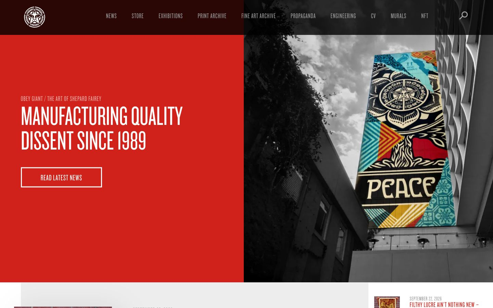

References / Website / 284
Obey Giant website
Shepard Fairey’s studio site opens with a full red panel of white condensed capitals beside a black-and-white photograph of one of his murals.
- Source
- obeygiant.com
- Creator
- Obey Giant (Shepard Fairey)
- Style
- Constructivism (agent-proposed, not yet reviewed by a person)
- Moods
- Agitational, bold, urban
- Evidence
- Captured with
tools/capture.mjs(headless Chrome, 1440 × 900) on 28 September 2026 and inspected. Nothing covers the first viewport. The measurement covers up to four screens. - Reviewed
- Rights
- Third-party work, stored with credit for commentary. License: unverified. Rights policy
Context
Wikipedia states that Fairey “began appropriating the Russian Constructivist style utilized in Soviet-era propaganda during his time in San Diego”. Wikipedia.
Observed
- The left half of the first viewport is a solid red panel. It carries “MANUFACTURING QUALITY DISSENT SINCE 1989” in large white condensed capitals, a small kicker in the same face, and a white outlined button “READ LATEST NEWS”.
- The right half is a black-and-white photograph of a building, looking up at a steep angle, with a colored mural that reads “PEACE”. Only the mural is in color.
- A dark bar across the top holds the star logo in a circle and the navigation in small gray condensed capitals.
- Corners are square. There are no shadows except a dark overlay on the navigation bar.
Why it belongs
The site passes five of seven fingerprint metrics: one hue, 19% chromatic area, 38% uppercase text, square corners, and few shadows. It fails type.headingWeight because the condensed display face (Knockout) is set at weight 400, although it reads as heavy, and color.gradientShare (0.08) because of the overlay on the photograph.
The upward view of the building echoes the steep camera angles of Rodchenko’s photography, but the page itself stays orthogonal.
Borrow
Split the first screen into a solid red text panel and a black-and-white photograph.
Set a two-line slogan in condensed capitals and a single outlined button, with nothing else in the panel.
Measured
Machine-extracted by tools/extract-traits.js on . Full measurement.
- Type families
- Sentinel SSm A (62%), Knockout 27 A (38%)
- Type scale ratio
- 1.42
- Median radius
- 0 px
- Mean chroma
- 0.13
- Palette
- #ffffff 37%
- #d0221b 19%
- #ededed 16%
- #000000 12%
- #999999 11%
- #333333 6%
- #666666 0%

